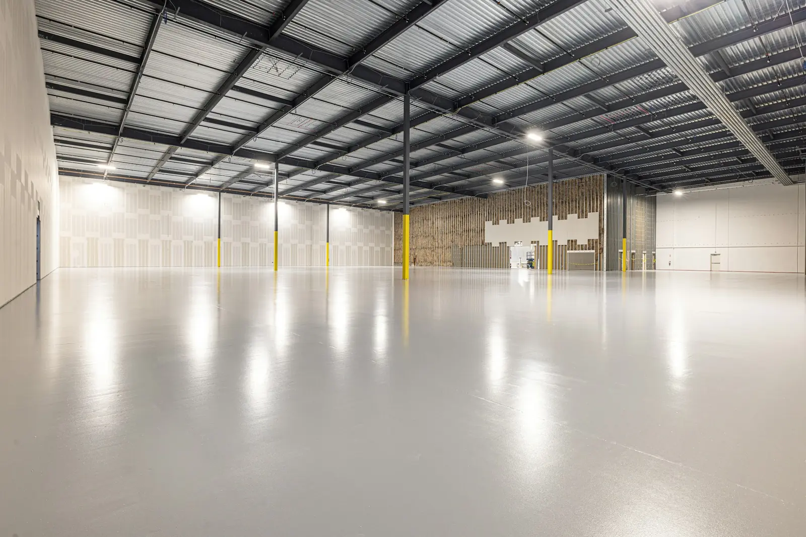

Floor systems matched to the chemicals, heat and traffic your floor sees — installed around your schedule so the business keeps running.
Call Now for a Free EstimateTell us about the floor and we'll call you back the same working day.
Prefer to talk? Call (650) 300-3108
Commercial epoxy flooring in Palo Alto protects concrete where a bare slab would wear, stain or hold onto spills. Our work covers research labs around Stanford Research Park, restaurant kitchens off University Avenue and California Avenue, plus offices, gyms and storage rooms. Each floor is built for what it faces every day, from solvents to boiling-water washdowns.

Commercial epoxy flooring starts with a site walk to understand traffic, chemicals, cleaning methods and your operating hours. From there, the install is planned in phases so the work doesn't stop your business.
Night, weekend and phased installs are available, and we hand back sections as they cure.
A commercial floor coating is usually needed at one of these moments in a building's life:
If you're not sure what the space needs, the free site walk is the place to start.
Commercial floor coatings usually fail because the wrong system went into the space. Standard epoxy can crack and lift under hot-water washdowns and the steady heat of a commercial kitchen, which is why kitchens get urethane cement instead.
Labs fail for a different reason: strong solvents and acids can soften a general-purpose coating, and a chemical-resistant epoxy is the fix. Add in skipped grinding, untreated joints and moisture coming through the slab, and you have the causes behind almost every failed commercial floor we see.
Every job is quoted in person after we measure and test the slab, and the estimate is free. These are the things that shape the quote:
You get a written quote before anything is scheduled. Book your free on-site estimate or call (650) 300-3108.
Both are tough commercial floor systems. The right one depends on heat, water and chemicals in the space.
| Epoxy (incl. novolac) | Urethane cement | |
|---|---|---|
| Hot water and heat | Fine for normal cleaning; not for constant hot washdowns | Built for steam, boiling water and thermal shock |
| Chemical resistance | Strong; novolac handles harsh solvents and acids | Strong against food acids, fats and cleaners |
| Look | Smooth, glossy and easy to color | Matte or textured, more industrial |
| Typical spaces | Labs, offices, warehouses, gyms, retail | Restaurant kitchens, breweries, food prep |
For most labs, offices and storage spaces, a high-build or novolac epoxy is the right fit. For kitchens and anywhere with daily hot-water cleaning, urethane cement is the safer choice.
Usually, yes. Work can be scheduled at night, over a weekend or in phases, with each section handed back once it cures. Fast-cure systems can shorten downtime even more.
Most labs do well with a chemical-resistant epoxy, and spaces using strong acids or solvents may need a novolac epoxy. The right choice depends on what's handled in the room, so we review that during the site walk.
Yes. An integral cove base curves the coating up the wall a few inches, removing the seam where dirt and water collect. It's common in kitchens, labs and any space that gets washed down.
Foot traffic is usually allowed within 12 to 24 hours, and heavier equipment or forklifts after a few days. Exact times depend on the system and the temperature, and they're written into the schedule before work starts.
Call for a free site walk and a written quote planned around your hours.
Call (650) 300-3108 for a Free Estimate Request an Estimate Online